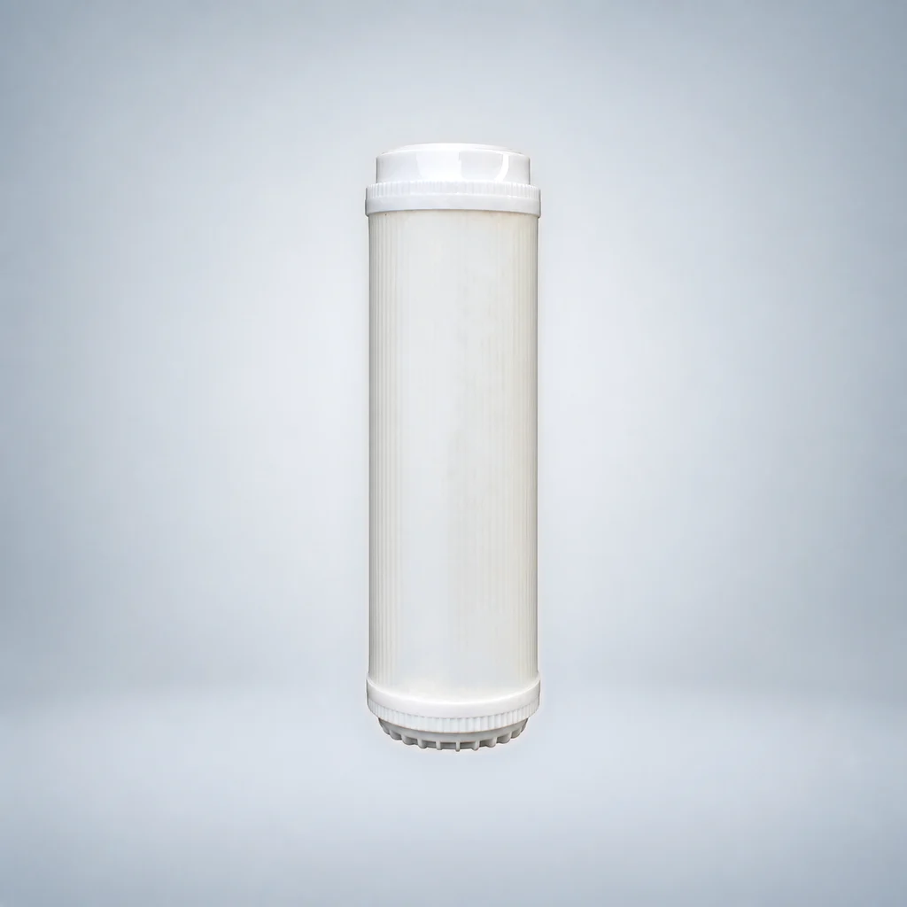

Lõi lọc than khối CTO, đầu phẳng
- Dạng sản phẩm
- Lõi lọc đầu phẳng
- Vật liệu lọc
- Than hoạt tính dạng khối (CTO)
So sánh dòng sản phẩm, kiểu kết nối và các yêu cầu dự án đã được xem xét trước khi yêu cầu báo giá.
So sánh các model được liệt kê và mở trang chi tiết. Các bản ghi model được tính riêng với các kích thước có thể tùy chỉnh; mức độ phù hợp phải được xác nhận cho dự án của bạn.





Lõi lọc cặn PP đầu phẳng là lõi tiền lọc dùng cho thiết bị lọc nước gia đình. Lõi thực hiện lọc thô nước nguồn và được mô tả là lọc cặn, tạp chất, gỉ sắt và chất lơ lửng.
Lõi lọc than hoạt tính dạng hạt gáo dừa UDF đầu phẳng sử dụng than hoạt tính dạng hạt được mô tả là có khả năng hấp phụ và giảm màu, mùi, clo dư, các hợp chất hydro halogen hóa và chất hữu cơ trong nước.
Lõi lọc than khối gáo dừa CTO đầu phẳng được mô tả là có khả năng giữ lại chất hữu cơ, các hạt và tạp chất khác, đồng thời hấp phụ và giảm màu, mùi, clo dư và các chất phóng xạ khác. Lõi cũng được mô tả là ức chế sự sinh sản của vi sinh vật, làm sạch nước và cải thiện vị của nước.
Lõi lọc than hoạt tính gáo dừa T33 đầu phẳng chứa than hoạt tính gáo dừa được rửa bằng axit, với chỉ số iốt được nêu là trên 1100. Thông tin sản phẩm mô tả khả năng hấp phụ mạnh, giảm màu, mùi và clo dư, tăng hàm lượng oxy, ức chế sự phát triển của vi sinh vật và cải thiện vị của nước.
Lõi lọc than hoạt tính thiêu kết PCO đầu phẳng có chỉ số iốt cao được làm từ than hoạt tính gáo dừa nhập khẩu cỡ 80–200 mesh, có chỉ số iốt cao, được rửa bằng axit và xử lý bằng phương pháp thiêu kết đặc biệt. Lõi được mô tả là hấp phụ clo dư, màu, mùi và các chất có hại khác, giữ lại chất hữu cơ và các hạt, ức chế sự sinh sản của vi sinh vật, làm sạch nước và cải thiện vị của nước.
Lõi lọc than hoạt tính dạng hạt gáo dừa UDF đầu phẳng sử dụng than hoạt tính dạng hạt được mô tả là có khả năng hấp phụ và giảm màu, mùi, clo dư, các hợp chất hydro halogen hóa và chất hữu cơ trong nước.
Lõi lọc than khối CTO đầu phẳng được mô tả là có khả năng giữ lại chất hữu cơ, các hạt và tạp chất khác, đồng thời hấp phụ và giảm màu, mùi, clo dư và các chất phóng xạ khác. Lõi cũng được mô tả là ức chế sự sinh sản của vi sinh vật, làm sạch nước và cải thiện vị của nước.
Lõi lọc than hoạt tính gáo dừa T33 đầu phẳng chứa than hoạt tính gáo dừa được rửa bằng axit, với chỉ số iốt được nêu là trên 1100. Thông tin sản phẩm mô tả khả năng hấp phụ mạnh, giảm màu, mùi và clo dư, tăng hàm lượng oxy, ức chế sự phát triển của vi sinh vật và cải thiện vị của nước.
Lõi lọc than hoạt tính thiêu kết PCO đầu phẳng có chỉ số iốt cao được làm từ than hoạt tính gáo dừa nhập khẩu cỡ 80–200 mesh, có chỉ số iốt cao, được rửa bằng axit và xử lý bằng phương pháp thiêu kết đặc biệt. Lõi được mô tả là hấp phụ clo dư, màu, mùi và các chất có hại khác, giữ lại chất hữu cơ và các hạt, ức chế sự sinh sản của vi sinh vật, làm sạch nước và cải thiện vị của nước.
Lõi lọc màng UF đầu phẳng sử dụng công nghệ màng siêu lọc sợi rỗng với độ chính xác lọc được nêu là 0.01 micrometres. Lõi được mô tả là giảm các hạt siêu mịn có kích thước đại phân tử, chất gây sốt, vi rút và vi khuẩn, trong đó tỷ lệ loại bỏ vi khuẩn được nêu là 99.9%, đồng thời giảm độ đục của nước. Lưu lượng nước sau lọc định mức được nêu là 3.9 L/min ở áp suất nước áp dụng 0.1–0.4 MPa.